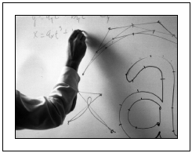

The PostScript language's painting operators include general
facilities for dealing with sampled images. A sampled image (or
just "image" for short) is a rectangular array of sample values,
each representing a color. The image may approximate the appearance of
some natural scene obtained through an input scanner or a video
camera, or it may be generated synthetically.

FIGURE 4.21 Typical sampled image
An image is defined by a sequence of samples obtained by scanning the
image array in row or column order. Each sample in the array consists
of as many color components as are needed for the color space in which
they are specified—for example, one component for DeviceGray,
three for DeviceRGB, four for DeviceCMYK, or whatever number is
required by a particular DeviceN space. Each component consists
of a 1-, 2-, 4-, 8-, or 12-bit integer, permitting the representation
of 2, 4, 16, 256, or 4096 different values for each component.
Depending on LanguageLevel, PostScript implementations differ in
the facilities they offer for images:
Most LanguageLevel 1 implementations support only grayscale
images—that is, ones whose image samples consist of a single
gray component. These can be painted by means of the five-operand
form of the image operator. Image
samples must consist of 1, 2, 4, or 8 bits per component; 12-bit
components are not supported. The image's source data must be
provided by a procedure and not directly by a file or string.
A few LanguageLevel 1 implementations have been extended to
support color images containing three or four components per sample,
interpreted as RGB or CMYK. These can be painted by means of the colorimage operator.
LanguageLevel 1 products containing this feature are primarily color
printers, and also support the setcmykcolor
operator and 4-color rendering features.
LanguageLevel 2 includes all features of LanguageLevel 1.
Additionally, it supports a one-operand form of the image operator in which the operand is
an image dictionary, providing a more general means for
specifying the image's characteristics. Other LanguageLevel 2
features include 12-bit component values, direct use of files or
strings as data sources, interpretation of sample values in arbitrary
color spaces (such as CIE-based), and additional decoding and
rendering options.
All implementations support the imagemask operator, which paints
the current color through a stencil mask specified as a bitmap (see "Stencil Masking" on page 302). However,
specification of the operands using an image dictionary is a
LanguageLevel 2 feature.
There are often several ways to paint a given image, depending
on the level of language features to be used. Fortunately, most
properties of images do not depend on how painting is invoked or how
operands are represented. The sections that follow frequently refer to
specific features, such as colorimage or image dictionaries; see the
summary above to determine which features are available in a
particular PostScript implementation.